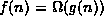
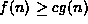

Data Structures and Algorithms
with Object-Oriented Design Patterns in C++
Data Structures and Algorithms
with Object-Oriented Design Patterns in C++The big oh notation introduced in the preceding section is an asymptotic upper bound. In this section, we introduce a similar notation for characterizing the asymptotic behavior of a function, but in this case it is a lower bound.
Definition (Omega) Consider a function f(n) which is non-negative for all integers. We say that ``f(n) is omega g(n),'' which we write , if there exists an integer
and a constant c>0 such that for all integers
, .
The definition of omega is almost identical to that of big oh.
The only difference is in the comparison--for big oh it is
 ; for omega, it is .
All of the same conventions and caveats apply to omega as they do to big oh.
; for omega, it is .
All of the same conventions and caveats apply to omega as they do to big oh.
 Copyright © 1997 by Bruno R. Preiss, P.Eng. All rights reserved.
Copyright © 1997 by Bruno R. Preiss, P.Eng. All rights reserved.